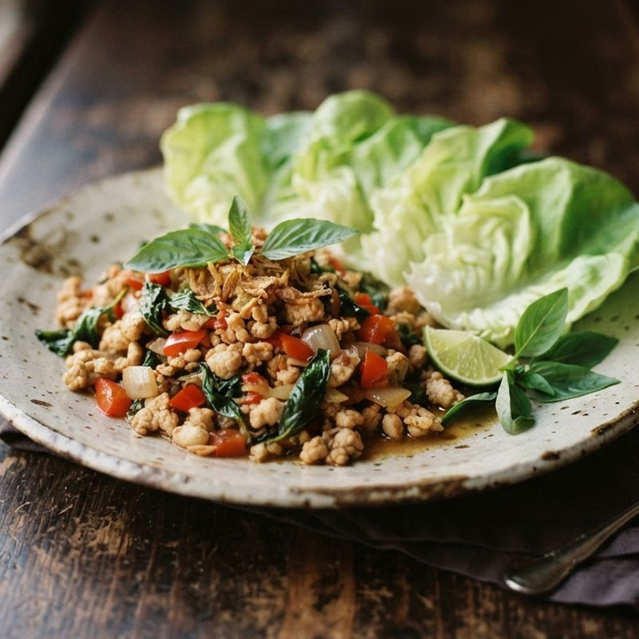

サケノツマミ ／ ビールに合うつまみ

ガパオのレタス包み
バジル香るひき肉を、レタスで巻いて。
- 時間
- 12分
- 道具
- フライパン
- 分量
- 2人分
合うお酒
ナンプラーとバジルの香りは、ビールやハイボールで流すとちょうどいい。
材料（2人分）
- 鶏ひき肉200g
- 玉ねぎ1/4個
- パプリカ（赤）1/4個
- にんにく1片
- ナンプラー小さじ2
- オイスターソース小さじ2
- 砂糖小さじ1/2
- 乾燥バジル（生なら5枚）小さじ1
- サラダ油小さじ1
- レタス4枚
作り方
- 玉ねぎ、パプリカは1cm角、にんにくはみじん切りにする。
- フライパンに油とにんにくを入れて中火で熱し、ひき肉を加えて色が変わるまで、ほぐしながら4分炒める。
- 玉ねぎ、パプリカを加えて2分炒め、ナンプラー、オイスターソース、砂糖、バジルを加えてからめる。
- レタスを添え、包んで食べる。
アプリで開いて保存する
お酒は20歳になってから。飲みすぎに注意しましょう。飲酒運転は法律で禁止されています。
利用規約プライバシーポリシー